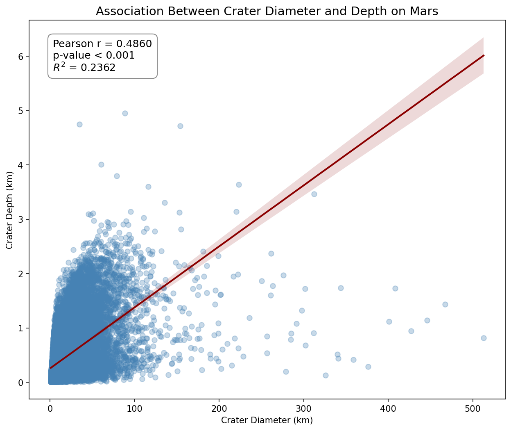

We now shift our focus back to our two quantitative variables: crater diameter and crater depth. To assess the mathematical strength and direction of their linear relationship, we calculate the Pearson Correlation Coefficient.
Using the raw continuous data for diameter (DIAM_CIRCLE_IMAGE) and depth (DEPTH_RIMFLOOR_TOPOG), we can calculate the r value and the coefficient of determination (R-squared) using Python's SciPy library.
import scipy.stats # Subset the data to our two quantitative variables and drop missing rows sub_corr = clean_data[['DIAM_CIRCLE_IMAGE', 'DEPTH_RIMFLOOR_TOPOG']].dropna() # Run the Pearson Correlation test corr, p_value = scipy.stats.pearsonr(sub_corr['DIAM_CIRCLE_IMAGE'], sub_corr['DEPTH_RIMFLOOR_TOPOG']) # Calculate R-squared r_squared = corr**2 print("=== Pearson Correlation Results ===") print(f"Pearson Correlation Coefficient (r): {corr:.4f}") print(f"p-value: {p_value:.4e}") print(f"R-squared: {r_squared:.4f}")
Running the correlation test yielded the following output:
| Statistic | Value |
|---|---|
| Pearson Correlation Coefficient (r) | 0.4860 |
| p-value | 0.0000e+00 |
| R-squared | 0.2362 |

Scatterplot visualizing the linear relationship between crater diameter and depth, including the line of best fit and Pearson correlation statistics.
Geological Interpretation
A Pearson correlation coefficient was calculated to assess the linear relationship between impact crater diameter (DIAM_CIRCLE_IMAGE) and crater depth (DEPTH_RIMFLOOR_TOPOG). The results reveal a highly significant, moderate positive correlation between the two variables (r = 0.486, p < 0.001). This indicates that as the size of a crater increases, its depth also tends to increase.
Furthermore, the coefficient of determination (R-squared) is 0.2362. This means that approximately 23.6% of the variability in crater depth is explained by the variance in crater diameter. This result strongly supports our earlier hypothesis: while the energy of the impact (diameter) is a significant predictor of how deep a crater will be, a large majority of the variance (~76.4%) is attributable to other factors, such as billions of years of aeolian deposition, volcanic resurfacing, and the physical limits of complex crater formation.